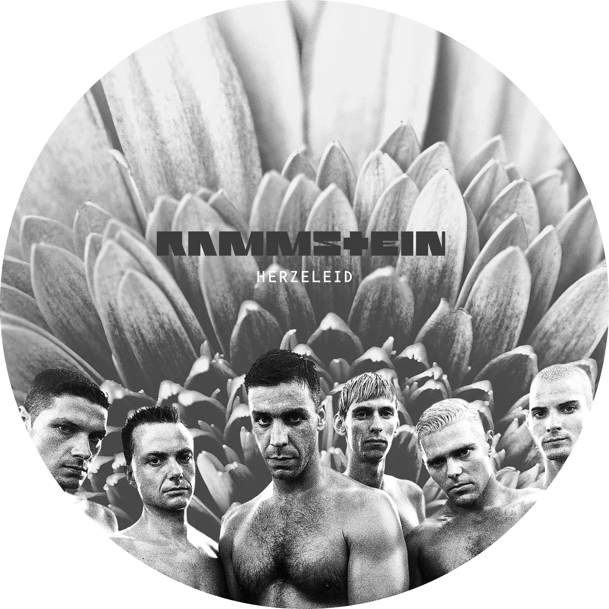
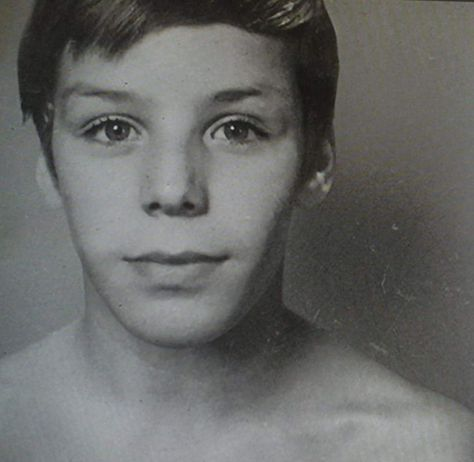
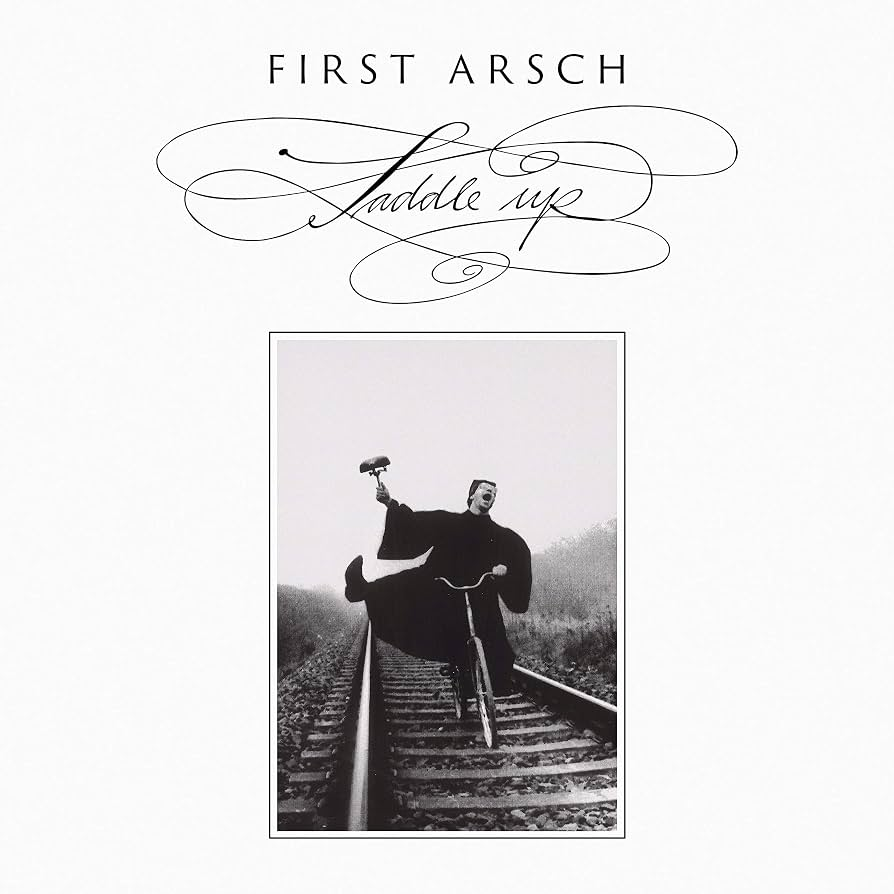
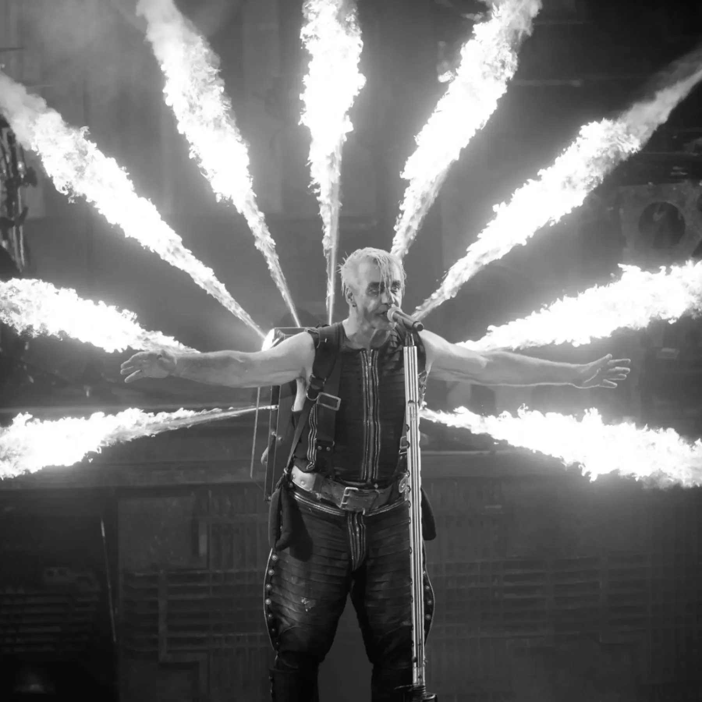

Rammstein
A 6 Legfontosabb Album a Rammstein Történetéből:

Herzeleid
Megjelenés: 1995. szeptember 24.
Számlista:
- Wollt ihr das Bett in Flammen sehen?
- Der Meister
- Weisses Fleisch
- Asche zu Asche
- Seemann
- Du riechst so gut
- Das alte Leid
- Heirate mich
- Herzeleid
- Laichzeit
- Rammstein
-modified.png)
SEHNSUCHT
Megjelenés: 1997. augusztus 25
Számlista:
- Sehnsucht
- Engel
- Tier
- Bestrafe mich
- Du hast
- Bück dich
- Spiel mit mir
- Klavier
- Alter Mann
- Eifersucht
- Küss mich
-modified.png)
Mutter
Megjelenés: 2001. április 2.
Számlista:
- Mein Herz brennt
- Links 2 3 4
- Sonne
- Ich will
- Feuer frei!
- Mutter
- Spieluhr
- Zwitter
- Rein raus
- Adios
- Nebel
-modified.png)
Reise, Reise
Megjelenés: 2004. szeptember 27.
Számlista:
- Reise, Reise
- Mein Teil
- Amerika
- Los
- Keine Lust
- Wo bist du
- Haifisch
- Morgenstern
- Stein um Stein
- Ohne dich
- Amour
-modified.png)
Rosenrot
Megjelenés: 2005. október 28.
Számlista:
- Benzin
- Mann gegen Mann
- Rosenrot
- Spring
- Wo bist du
- Stirb nicht vor mir (Don't Die Before I Do)
- Zerstören
- Hilf mir
- Te quiero puta!
- Feuer und Wasser
- Ein Lied
-modified.png)
Liebe ist für alle da
Megjelenés: 2009. október 16.
Számlista:
- Rammlied
- Ich tu dir weh
- Waidmanns Heil
- Haifisch
- B********
- Frühling in Paris
- Wiener Blut
- Pussy
- Liebe ist für alle da
- Mehr
- Roter Sand
-modified.png)
Rammstein
Megjelenés: 2019. május 17.
Számlista:
- Deutschland
- Radio
- Zeig dich
- Ausländer
- Sex
- Puppe
- Was ich liebe
- Diamant
- Weit weg
- Tattoo
- Hallomann
Az előadó:
Till Lindemann és a Rammstein karaktere
A Rammstein frontembere, Till Lindemann, a modern rockzene egyik legkarizmatikusabb és legegyedibb jelensége. Mély, zengő basszus-bariton hangja, teátrális színpadi jelenléte és jellegzetes rímelési stílusa azonnal felismerhetővé teszi a bandát. Lindemann nemcsak énekes, hanem képzett költő és szobrász is; a dalszövegek túlnyomó többségét ő írja, melyekben a német romantika klasszikus elemeit ötvözi a modern társadalmi tabukkal és az emberi lélek sötét oldalaival.
A zenekar hat tagja – Till Lindemann (ének), Richard Z. Kruspe (szólógitár), Paul Landers (ritmusgitár), Oliver Riedel (basszusgitár), Christoph Schneider (dob) és Christian "Flake" Lorenz (billentyűk) – az 1994-es megalakulás óta változatlan felállásban zenél együtt. Ez a ritka összhang teszi lehetővé, hogy a színpadon egyetlen jól működő, kollektív gépezetként működjenek, ahol mindenkinek megvan a maga pontosan megtervezett szerepe és karaktere.
Till Lindemann élete/gyerekkora
Gyermekkor és a sportolói múlt

Till Lindemann
1963. január 4-én született Lipcsében (volt NDK), de gyermekkorát a Mecklenburg-Elő-Pomeránia tartományban található Wendisch Baggow faluban töltötte. Édesapja, Werner Lindemann ismert gyermekkönyv-író volt, édesanyja, Brigitte "Gitta" Lindemann pedig újságíróként és fordítóként dolgozott. Till gyermekkora nem volt teljesen zökkenőmentes; édesapjával kifejezetten feszült és nehéz viszonyt ápolt, amit későbbi munkásságában is többször feldolgozott. Fiatalon a sport felé terelődött az élete: tehetséges úszóként bekerült a Rostocki Sportklubba, és az NDK ifjúsági válogatottjának tagja lett. 1980-ban még az oroszországi Moszkvában megrendezett olimpiai játékok keretébe is esélyes volt, ám egy súlyos hastáji sérülés miatt végül fel kellett adnia a profi sportkarriert.
Az ipari kezdetek és a művészetek

Miután kényszerűségből abbahagyta az úszást, Till különféle fizikai munkákat végett: dolgozott favágóként, kosárfonóként, sőt egy galériában is segédkezett. Az 1980-as évek végén a zene felé fordult, és először a First Arsch nevű punk/rock zenekarban dobolt. Itt barátkozott össze Richard Z. Kruspe-val, aki később a Rammstein alapító gitárosává vált. Lindemann kezdetben nem is akart énekes lenni, de amikor a barátai meghhallották a jellegzetes, mély orgánumát, meggyőzték, hogy ő álljon a mikrofon mögé. 1994-ben, Berlinben megalkották a Rammstein magját, amellyel alapjaiban változtatták meg a német rockzene történetét.
A költő, az előadó és a lángok mestere

A színpadi, olykor botrányos és félelmetes alteregója mögött Till Lindemann egy rendkívül összetett művész és mélyen zárkózott magánember. Zenei karrierje mellett elismert költő és szobrász: több önálló verseskötetet is publikált
(Messer, In stillen Nächten), költészetében pedig a 19. századi német romantika stílusjegyeit ötvözi a modern társadalmi tabukkal, az elfojtott vágyakkal és az elmúlással. Hivatalos pirotechnikusi vizsgával rendelkező előadóként a koncerten látható lángszórókat és robbanó acélszárnyakat maga irányítja. A magánéletben azonban kerüli a nagyvárosi csillogást; kétszeres édesapaként és nagyszülőként a természetben, vadászattal és horgászattal tölti szabadidejét, miközben a Rammstein mellett sikeres szólóprojektekkel is elvarázsolja a közönséget.
A Rammstein Koncertélmény:
A Rammstein élő fellépései nem meríthetők ki a hagyományos popzenei vagy rockzenei koncert
kategóriájában. Amit a hattagú berlini formáció a színpadra állít, az a kortárs előadóművészet, az ipari esztétika, a Gesamtkunstwerk (összművészet) és a kontrollált pusztítás egyedülálló fúziója. Egy Rammstein-koncert nem egyszerűen zenei élmény: a látvány, a hangnyomás, a fizikai hőhatás, a vizuális narratíva és az elfojtott társadalmi tabuk teátrális kiélése olyan totális szenzoros túlterhelést hoz létre, amely a közönséget a belépés pillanatától a
-
A Monumentalitás Léptéke: A szerkezet magassága gyakran meghaladja a 30-40 métert, a súlya pedig a több száz tonnát. A központi torony, amely a színpad közepén magasodik, egy disztópikus felhőkarcoló és egy finomító elegyére hasonlít.
-
A Fény- és Füsttechnika: A világítás nem csupán megvilágítja a zenészeket, hanem önálló építészeti elemként működik. A hideg, fehér és sárga fényszórók, valamint a stadion tetejéig érő koromfekete füstoszlopok olyan atmoszférát teremtenek, mintha a néző egy 19. századi gyárnegyed vagy egy sötét, jövőbeli metropolisz közepén állna.
-
A Szimmetria és a Gépiesség: A tagok mozgása és a színpad elrendezése a mechanikus rendet tükrözi. A zenekar nem rögtönöz: minden lépés, minden gitármozdulat és minden effektus szinte milliméterre ki van számítva, ami felerősíti a „gépszerű” és elidegenítő hatást.
Pirotechnika
Gyakori tévhit, hogy a Rammstein koncertjein a pirotechnika csupán olcsó látványelem vagy látványos díszlet. A valóságban a tűz a dalszövegek és a színpadi történetmesélés elsődleges kifejezőeszköze.
Till Lindemann énekes hivatalos, szigorú vizsgákkal megszerzett pirotechnikusi engedéllyel rendelkezik. Ez a szaktudás teszi lehetővé, hogy a zenekar olyan mutatványokat hajtson végre, amelyek egy átlagos produkció esetében vállalhatatlan kockázatot jelentenének.
-
Fizikai Hőhatás (Sensory Impact): A lángcsóvák nemcsak látványosak, hanem gigantikus hőmennyiséget bocsátanak ki. A több méter magas lángoszlopok kíséretében a stadion leghátsó soraiban ülő rajongók is azonnal megérzik az arcukon a perzselő forróságot. Ez a fizikai komponens elengedhetetlen ahhoz, hogy a néző ne csak nézője, hanem aktív átélője legyen az eseményeknek.
-
Ikonikus Pirotechnikai Kellékek:
- Lángszóró Maszkok (Feuer frei!): A gitárosok és az énekes olyan arcmaszkokat viselnek, amelyekből több méteres lángcsóvákat lövellnek ki közvetlenül az éneklés és a riffek közben.
- Égő Szárnyak (Engel): Lindemann a háta mögé szerelt, több mázsás acélszárnyakkal lép fel, amelyeknek a végeiből folyamatosan lángok és szikrák csapnak ki.
- A Kannibál-üst (Mein Teil): A dal során Till egy mészároskötényben, egy óriási üstben ülő billentyűst (Christian "Flake" Lorenz) "főz meg" egy ipari lángszóróval, amit a szám végén egy még nagyobb, pusztító tűzágyúra cserél.
- Babakocsi és Robbanások (Puppe): Egy óriási, félelmetes babakocsi lángol el a színpad közepén, miközben fekete szintetikus konfetti borítja be a nézőteret, szimbolizálva a gyermekkori traumák és az elfojtás felrobbanását.
Színház
és a Karakterek Dinamikája:
A Rammstein tagjai a színpadon jól elkülöníthető színházi karaktereket jelenítenek meg. Ez a leosztás feszültséget és humorral vegyített tragikumot visz az előadásba.
-
Till Lindemann: A Mészáros és a Meggyötört Lélek:
Till Lindemann színpadi jelenléte egyszerre félelmetes, teátrális és végtelenül kiszolgáltatott. Mély orgánuma, a „rolled-R” (pörgő R) kiejtése és a jellegzetes „Till-hammer” (amikor ritmusra ütögeti a saját combját vagy térdét) a banda vizuális névjegye. Nem beszél a közönséghez két szám között, nem mondja, hogy „Hello Budapest” vagy „Hands in the air”. Karakterben marad az első másodperctől az utolsóig: ő a sötét mesemondó, a dühös óriás vagy a tragikus hős.
-
Flake Lorenz: A Megkínzott Billentyűs
Christian "Flake" Lorenz a zenekar humora és egyben bűnbakja. Miközben a szintetizátorán játszik, folyamatosan egy futópadon gyalogol, szimbolizálva a mókuskerékben rekedt modern embert. Ő az, akit Till a show során rendszeresen „bántalmaz”, üstbe zár, vagy csónakba ültet
-
A Gumicsónak-akció (Crowd Surfing)
A koncertek egyik legemberibb és leglátványosabb pillanata, amikor a zenekar tagjai (gyakran a billentyűs vagy a gitárosok) felfújható gumicsónakokba ülnek, és a közönség a kezein hordozza őket körbe a küzdőtéren a kis színpadtól a nagyszínpadig. Ez a gesztus megteremti a fizikai kapcsolatot a megközelíthetetlen, óriási színpad és a rajongói tenger között.
A többi tag:
Alapító: Richard Z. Kruspe
szólógitár, vokál
.jfif)
- Születés: 1967. június 24-én született Wittenbergben (NDK).
- Gitározás kezdete: Csehszlovákiában vett egy gitárt, kezdetben csak azért, hogy könnyebben csajhozzon.
- Drasztikus menekülés: Az NDK-s rendszer elől 1989-ben illegálisan disszidált Nyugat-Berlinbe Magyarországon és Ausztrián keresztül.
- Alapító szerep: Ő volt a fő mozgatórugó, aki 1994-ben életre hívta a Rammstein projektet.
- Külföldi élet: A 2000-es évek elején New Yorkba költözött magánéleti okok miatt, itt alapította az Emigrate nevű bandáját.
A Rammstein története az 1990-es évek elején, a fal leomlása utáni Berlinben és Kelet-Németországban kezdődött, amikor a hidegháború utáni kulturális robbanás útjára indította az underground művészeket. A zenekar megalakulásának a kulcsfigurája Richard Z. Kruspe gitáros volt, aki a '90-es évek elején Schwerinben és Berlinben élt. Richardot mélyen lenyűgözte az amerikai zene, különösen a KISS látványvilága és a Nirvana nyerssége, de egy teljesen új, egyedi hangzást akart létrehozni: az amerikai heavy metal súlyos gitáriffjeit szerette volna ötvözni az európai, gépies, elektronikus szintetizátoros zenével.
A tervek megvalósításához 1994-ben összehívta a barátait a kelet-berlini underground szcénából. Csatlakozott hozzá a korábbi kultikus punk zenekar, a Feeling B basszusgitárosából lett ritmusgitáros, Paul Landers, valamint a billentyűs Christian "Flake" Lorenz is. Ugyancsak a csapat magját alkotta Christoph "Doom" Dobos, valamint Oliver Riedel basszusgitáros. Az utolsó és legfontosabb láncszem Till Lindemann lett, aki korábban profi úszóként, majd kosárfonóként és favágóként dolgozott, és a First Arsch nevű punkzenekarban dobolt. Amikor a társak meghallották Till jellegzetes, orgánumszerű, mély basszus-bariton hangját, azonnal meggyőzték, hogy ő legyen a zenekar énekese és szövegírója.
A zenekar neve egy tragikus eseményre vezethető vissza: 1988-ban a nyugat-németországi Ramstein légibázison egy repülőnap során súlyos katasztrófa történt, ahol három vadászgép ütközött össze, és a zuhanás sok ártatlan néző halálát okozta. A zenekar alapítói ezt a nevet választották a sötét, sokkoló hangulatuk kifejezésére, bár a hivatalos elnevezésbe egy extra „m” betűt is csempésztek (Rammstein), amivel hivatalosan elhatárolódtak a közvetlen tragédiától, mégis megőrizték a név által hordozott elemi erőt és feszültséget.
A zenekar alig néhány hónapos közös munka és próbák után megnyert egy berlini tehetségkutató versenyt, ami elhozta számukra az első lemezszerződést a Motor Music kiadónál. 1995-ben megjelentették debütáló albumukat, a Herzeleid-et, amely azonnal beindította a Neue Deutsche Härte nevű új zenei mozgalmat. Nemcsak Németországban, hanem hamarosan egész Európában és a világ többi részén is hódítani kezdtek. Azóta a felállásuk több mint három évtizede teljesen változatlan, ami a rockzene történetében is ritkaságszámba megy, és a folyamatos vizuális megújulásnak, valamint a kompromisszummentes ipari művészetnek köszönhetően a mai napig a bolygó egyik legsikeresebb koncertzenekara maradtak.
Christian „Flake” Lorenz
billentyűs hangszerek
.jfif)
- Születés: 1966. november 16-án született Kelet-Berlinben (NDK).
- Eredeti szakma: Polgári családban nőtt fel, és fiatalon hivatalos cserépkályha-építő, valamint lakásrestaurátor képesítést szerzett.
- Zenei háttér: Nem tanult klasszikus zongorát, autodidakta módon, a punk és az új hullám hatására kezdett zenélni.
- Feeling B: Ő is a Feeling B zenekar billentyűse volt a fal leomlása előtti kelet-berlini undergroundban.
- Félelem a metáltól: Meglepő módon a mai napig nem szereti a nehéz metált, inkább a jazz és a klasszikus elektronikus zene a kedvence.
Paul Landers
szólógitár, vokál
.jfif)
- Születés: 1964. december 9-én született Berlinben (NDK).
- Gyermekkori utazás: Édesapja nyelvész volt, így egy ideig a Szovjetunióban (Moszkvában) is élt a családjával, ezért jól beszél oroszul.
- Eredeti szakma: Zenei karrierje előtt fűtésszerelőként és könyvtárosként is dolgozott Kelet-Berlinben.
- Punk múlt: Az underground punk szcénában szocializálódott, és a kultikus kelet-berlini Feeling B zenekar tagja volt.
- Közös múlt: Richarddal és Flakével már a Rammstein előtt is évek óta együtt zenéltek az NDK underground világában.
Oliver Riede
basszusgitár

- Születés: 1971. április 11-én született Schwerinben (NDK).
- Eredeti szakma: Az iskola elvégzése után vakolatfestőként és lakásfelújítóként dolgozott Schwerinben.
- Vizuális érdeklődés: A zene mellett erős vizuális vénája van: szeret festeni, szobrászkodni, és érdekli a belsőépítészet.
- Visszahúzódó alkat: Ő a zenekar legcsendesebb, leginkább háttérben maradó tagja, aki interjúkban ritkán beszél feleslegesen.
- Extrém sportok: Szabadidejében a szörfözés és a snowboardozás elkötelezett rajongója.
Christoph Schneider
dobok
.jfif)
- Születés: 1966. május 11-én született Kelet-Berlinben (NDK).
- Zenei családi háttér: Édesapja támogatásával már gyermekkorában elkezdett klasszikus ütőhangszereket tanulni a zeneiskolában.
- Katonai szolgálat: Ő volt a zenekar egyetlen tagja, akit hivatalosan besoroztak katonának az NDK-ban, így le kellett tennie a fegyveres szolgálatot.
- A beceneve: A "Doom" becenevet egy régi számítógépes játékból kapta a kezdeti időszakban, azóta is így szerepel a lemezeken.
- Közösségi média: Ő az egyik legaktívabb tag a rajongókkal való kapcsolattartásban, gyakran oszt meg kulisszák mögötti fotókat.